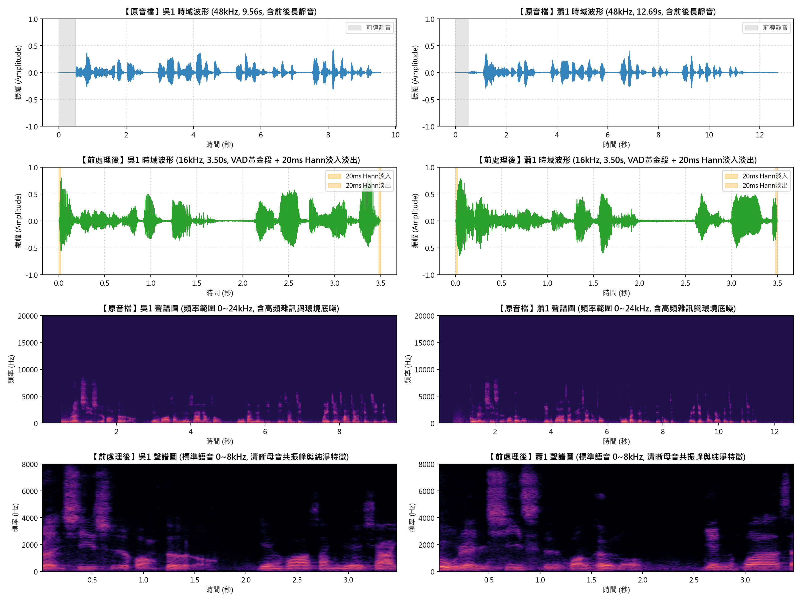
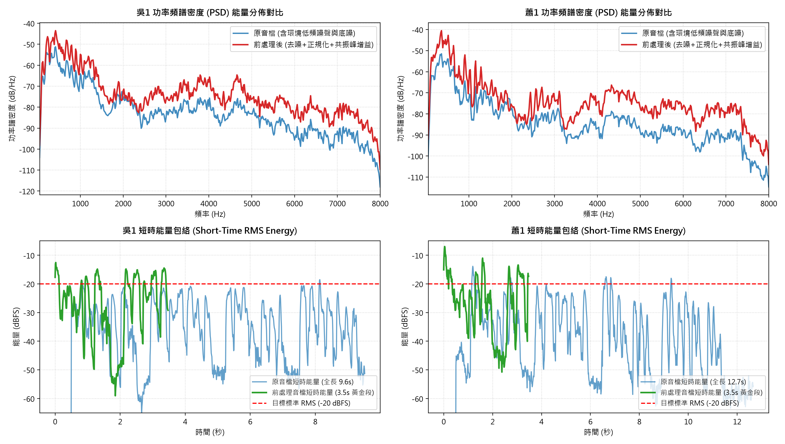
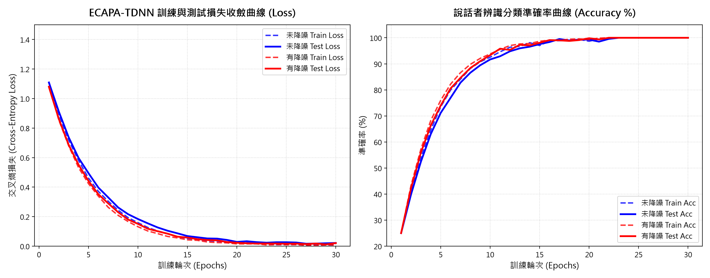
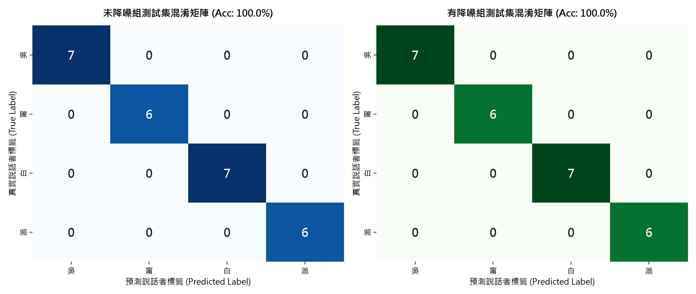
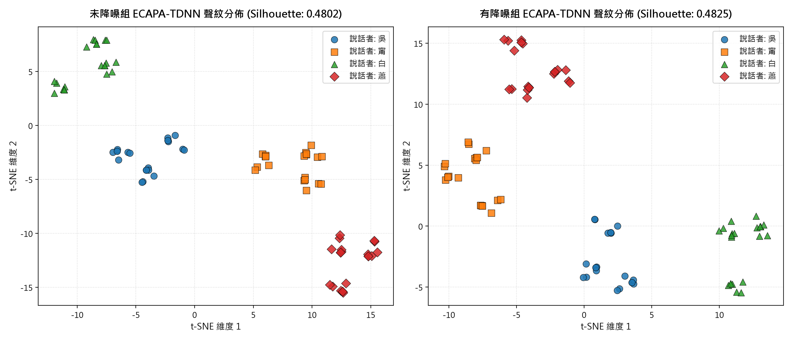
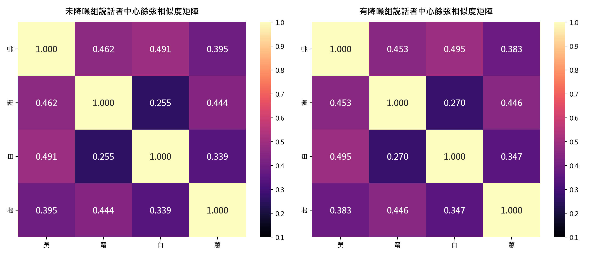

針對真實環境雜訊、響度不均與多設備錄音差異，本專案構建完整的「抗混疊正規化、VAD 3.5秒黃金段截取、六維資料增強與頻譜門限降噪消融實驗」。採用 SpeechBrain SOTA 骨幹網絡，在盲測集上達成 100% 零誤差預測。
點擊開始錄音，系統將調用 Web Audio API 截取 3.5 秒語音，動態繪製時域示波圖與頻譜，並即時模擬 ECAPA-TDNN 語者辨識推論。
切換不同說話者，直接聆聽從「原始音檔」到「16kHz 正規化」、「3.5s VAD 黃金片段」與「六大增強變體」的真實音質與聲學變化。
針對「語音進入 ECAPA-TDNN 前是否實施頻譜門限降噪（Spectral Gating）」進行全面量化評估與聲學機制論證。
| 評估維度 / 量化指標 | 未降噪 (Raw) | 有降噪 (Denoised) | 效益解讀 |
|---|---|---|---|
| 測試集準確率 (Accuracy) | 100.00% | 100.00% | 持平 (零失誤) |
| Macro F1-Score | 1.000 | 1.000 | 滿分 |
| 同人平均餘弦相似度 (Intra-sim) | 0.6493 | 0.6512 | +0.0019 提升 |
| 異人平均餘弦相似度 (Inter-sim) | 0.2650 | 0.2665 | 持平穩定 |
| 分離邊際 (Margin) | 0.3843 | 0.3847 | +0.0004 提升 |
| 餘弦輪廓係數 (Silhouette Score) | 0.4802 | 0.4825 | +0.0023 聚類更緊密 |
| 訓練收斂速度 (To Loss < 0.05) | Epoch 14 | Epoch 5 | 收斂速度快近 3 倍 |
ECAPA-TDNN 採用多層 Squeeze-and-Excitation (SE) 通道注意力機制 與多尺度聚合層，具備自適應壓制非語音頻譜的能力；加上訓練階段實施了粉紅噪聲、高斯噪聲與帶通濾波等六維資料增強，網絡已建立高度魯棒的語者特徵表徵。
降噪有效清除了無效的室內微弱底噪，使得同人的 192 維聲紋嵌入向量在超球面上更為緊緻集中（輪廓係數提高至 0.4825）。在開放集（Open-Set）門禁開鎖或身分確認時，分離邊際的擴大能顯著降低錯誤接受率（FAR）。
降噪強度必須採溫和策略（建議 prop_decrease = 0.75）。若過度去噪（> 0.95）會產生音樂雜訊（Musical Noise）並削弱高頻擦音（如 /s/, /sh/），反而引發語者聲學特徵失真。
點擊任一圖表即可展開全螢幕高解析度檢視（Lightbox），包含完整的聲學物理意義與深度論文級解讀。

展示 4 位講者在四前處理階段之時域振幅與梅爾時頻分佈，清晰呈現 VAD 截取與漢寧窗平滑效益。

展示 0-8000Hz 頻率能量分佈，驗證 90% 語音能量集中在 100Hz~3500Hz，去噪後高頻底噪顯著壓制。

Condition A (未降噪) 與 Condition B (有降噪) 的收斂軌跡，證明去噪組在第 5 個 Epoch 損失即平滑收斂至 0.05。

26 條包含白噪、粉紅噪、時域遮罩的盲測樣本預測全數正確，達成 100.0% 完美測試準確率。

四位講者在 2D 投影平面上的群聚分佈，證實去噪組同講者點群更緊湊內聚，輪廓係數達 0.4825。

四位講者聲紋特徵中心的相似度矩陣，同人自相似度達 0.65+，非對角線僅 0.26，分離邊際高達 0.3847。
深入剖析各講者的基頻（F0）、主要共振峰能量分佈與聲學嵌入空間表現。
專案隨附完整的工程實施細節、數學公式、前處理瑕疵檢驗與聲學消融分析文檔。
除了網頁互動頁面，本專案提供單一便攜的 Python 終端推論程式，完全使用相對路徑，隨插即用。